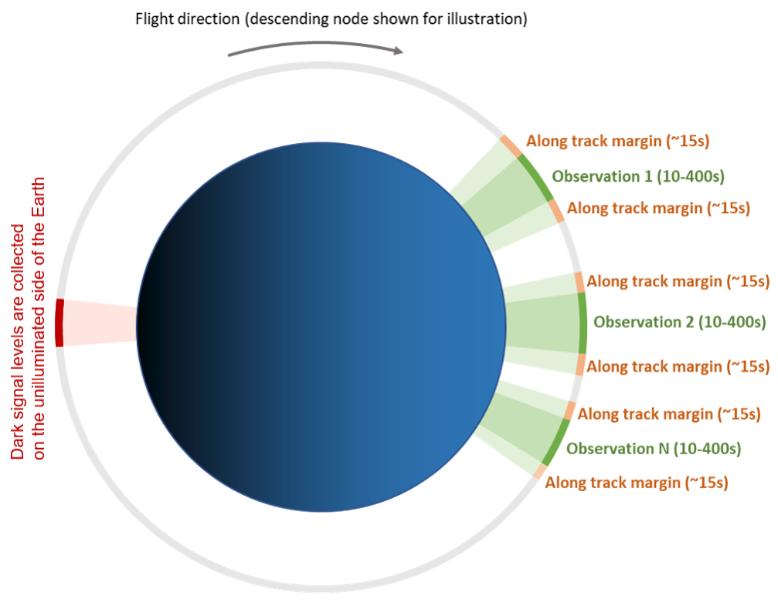

EMIT, Dünya'nın kurak yerlerdeki mineral tozu kaynaklarını toplamak için ve ISS'de (International Space Station) başarılı bir şekilde çalışmak için karmaşık bir operasyonel mimariye sahip. EMIT Bilim Takımı, muhtemel gelecekteki kurak mineral toz kaynağı bölgeleri için hedef alanları geliştirdi ve rafine etti.
Operasyon Takımı, EMIT hedefi olan ISS altındaki dünyanın boyutlarının ölçümünü yapması için EMIT'e komut gönderecekler. Bu toz kaynağı hedefleri, Güneş tarafından iyi aydınlatılan koşullar altında ölçülecek. EMIT'ten ölçülen sinyalleri işlemek için, karanlık sinyal seviyeleri EMIT tarafından, Dünyanın aydınlanmamış kısmında görüntülendi. (Karanlık sinyal seviyeleri, teleskopa sinyal ulaşmadığı zamanlarda cihaz tarafından toplanan değerlere denir.)
EMIT kapsama alanı, EMIT hedef alanları üzerinde aydınlatma koşulları uygun olduğunda, yol boyunca yörünge edinimlerinden oluşturulur. Tamamlandığında EMIT görüntüleme spektroskopisi ölçümleri tüm hedef alan üzerinden elde edilecekti. EMIT, tam kapsama sağlamak için çevresinden ekstra ölçümler toplayacak, böylece periyodik bulut karartmasına olanak sağlamak için hedef alanlar üzerinden birden fazla veri toplayacak. Tüm bu ölçümler EMIT bilim hedeflerine ulaşmak amacıyla Dünya Sistem Modeli için, mineral bileşimi haritaları sağlamak üzere EMIT Bilim Veri Sistemi aracılığıyla işlenecektir. EMIT ölçüm ve ürünleri daha sonra kullanılmak üzere Dağıtılmış Aktif Arşiv Merkezinde (DAAC) arşivlenecektir.